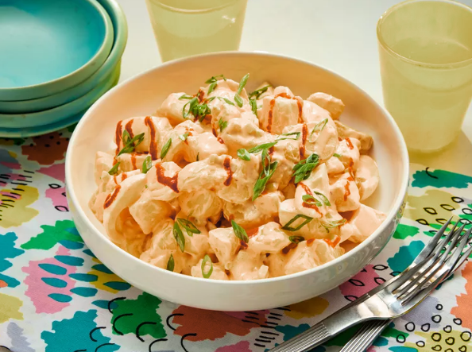

Bang Bang Potato Salad

Description
This recipe offers a unique and flavorful twist on traditional potato salad, bringing the popular "Bang Bang" flavor profile—known for being sweet, spicy, and creamy—to the classic side dish.
The dish combines tender, creamy boiled potatoes and hard-cooked eggs with a slightly sweet, spicy, and tangy sauce made from mayonnaise, buttermilk, Sriracha, and Thai chili sauce. The addition of fresh celery provides a desirable cool crunch, resulting in a combination of textures and flavors that is much lighter and more complex than standard mayonnaise-heavy potato salad.
Ingredients
8 cups cold water
2 1/2 pounds waxy potatoes (such as Yukon Gold potatoes), peeled and cut into 3/4-inch pieces
2 tablespoons , plus 1 teaspoon kosher salt, divided
1 tablespoon unsalted butter
3/4 cup mayonnaise
2 tablespoons whole buttermilk
2 tablespoons Sriracha chili sauce, plus more for drizzling
1 tablespoon sweet Thai chili sauce
1 tablespoon rice vinegar
4 hard-cooked eggs, peeled and quartered
1 large celery stalk, finely chopped
Sliced scallions, on an angle
Steps
Gather all ingredients.
Bring water, potatoes, and 2 tablespoons salt to a boil in a large Dutch oven or medium pot over high heat. Reduce heat to medium-high and cook, stirring occasionally, until potatoes are just fork-tender, 6 to 8 minutes. Drain potatoes and place in a large bowl; gently toss with butter and remaining 1 teaspoon salt. Refrigerate, uncovered, until completely cool, about 45 minutes.
Stir together mayonnaise, buttermilk, chili sauce, Thai chili sauce, and rice vinegar in a medium bowl until combined.
Add eggs and celery to potatoes; gently stir mayonnaise mixture into potatoes until well combined; top with scallions and drizzle with Sriracha.
Enjoy with someone!
Home
Up